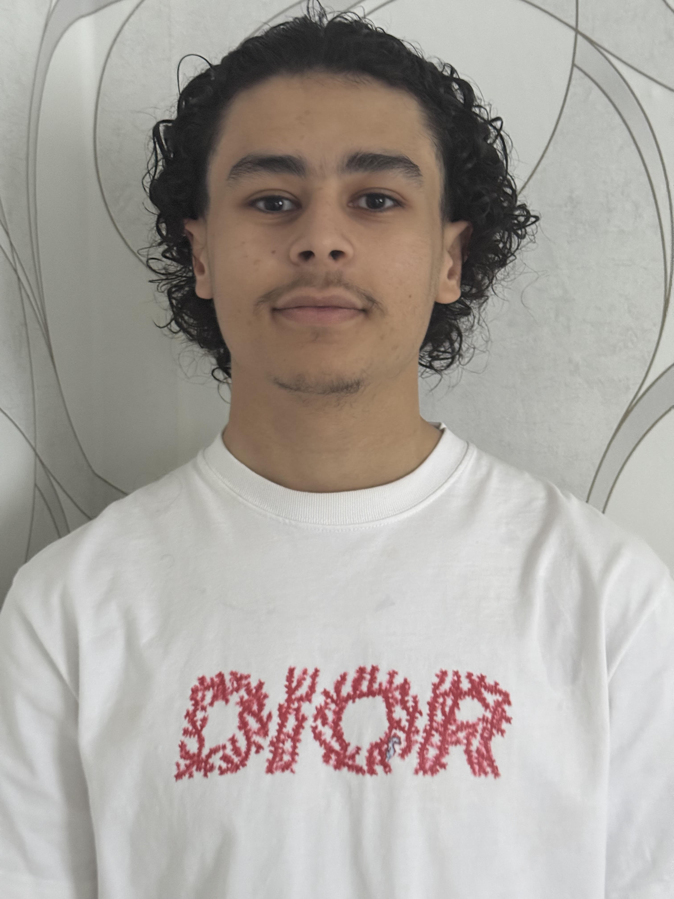

// 01 — à propos
Mon Histoire

BUT R&T
Réseaux · Télécoms · Sécu
Je m'appelle Sofyen Ayed. Ce qui m'anime, c'est une curiosité profonde pour les systèmes de communication : comprendre comment l'information voyage, comment un signal se propage, et comment protéger tout ce qui circule.
En BUT Réseaux & Télécommunications à l'IUT Nice Côte d'Azur, je développe une expertise qui couvre les trois dimensions de ma formation :
Réseaux
Architecture, routage IP, VLANs, protocoles L2/L3, Cisco IOS.
Télécommunications
Transmission RF, DVB-T/S, modulations (QAM), câblage, mesures physiques.
Cybersécurité
Audit, pentesting, analyse de risques EBIOS, sécurité des infrastructures.
Je cherche à mettre ces compétences en pratique lors d'un stage du 7 avril au 19 juin 2026, dans une structure où réseaux, télécoms et sécurité sont au cœur du métier.
Cisco CCNA
Trophées NSI
Réalisations